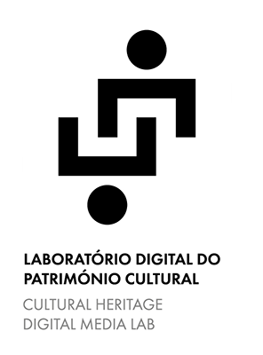
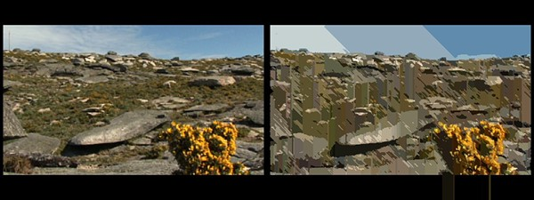
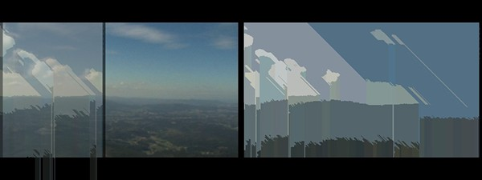

Objectivos
O Património Cultural Imaterial manifesta‐se entre outros domínios nas tradições e expressões orais, nas práticas sociais, rituais e eventos festivos, nos conhecimentos e práticas relacionados quer com a natureza como com o universo (UNESCO). Apresenta‐se assim como um vasto conjunto de manifestações e de expressões de carácter intangível e que têm a memória como meio de preservação e a oralidade como meio de transmissão. Surge então englobado no seio desta imaterialidade as lendas, os mitos, os contos populares, como igualmente os rituais e as festas, bem como todo o universo de saberes e vivências da cosmogonia popular (UNESCO). Contrariamente ao designado património cultural material, o imaterial difere do pri- meiro relativamente aos seus suportes, de uma grande fragilidade e, em consequên- cia, facilmente perecíveis. É neste sentido que a necessidade urgente em recuperá‐ los, recolhê‐los e preservá‐los, no âmbito de projetos como o apresentado, tendo como objetivos a sua inventariação, o seu tratamento, bem como a sua divulgação, determinantes para a memória coletiva e identidade dos grupos ou das sociedades.
gerais
Recolha e tratamento da informação relativa ao património cultural de Portugal, Cabo Verde, Brasil e Guiné-Bissau, essencialmente na área das artes, das formas de representação artística e respetiva produção. A centralidade do projeto reúne-se em torno do patrimó- nio (primordialmente imaterial), do imaginário coletivo, da memória e da identidade.
- proceder à recolha e tratamento do património imaterial dos países envolvidos, criando uma plataforma digital (alojada em Portugal), reunindo bibliografia, gravações áudio, registos vídeo e fotografia;
- contribuir para a divulgação do património cultural imaterial, através da realização de documentários, exposições, dramatizações e outras formas, bem como de um serviço educativo vocacionado para esse objetivo;
- desempenhar um papel ativo no desenvolvimento sociocultural da(s) região(ões) quer como lugar de construção e representação do património cultural imaterial, quer como lugar de revalorização e valorização desse património, transformando‐o num fator de autoes- tima e recurso cultural das populações;
- participação da mulher nas atividades e práticas patrimoniais gerando benefícios para o seu empoderamento e igualdade de género;
- utilização dos materiais recolhidos e produzidos no âmbito da plataforma digital para fins pedagógicos junto das populações em idade escolar dos respetivos países / regiões envolvidos;
- contribuir para a formação pedagógica em linguagem audiovi- sual (fotografia e vídeo) na recolha do património, bem como em atividades de formação na utilização dos novos media.
O Laboratório Digital do Património Cultural deverá ter como obje- tivos aumentar a consciência do património, junto das populações locais, assim como consciencializar uma participação ativa das populações na construção da referida plataforma, isto é, na recolha do património, da memória, do seu imaginário coletivo.
Específicos
Valorização do património, como forma de promover o desenvolvimento integrado e sustentável dos locais, regiões e países.
- Criação de uma plataforma digital dos conteúdos produzidos;
- Recolha do património (histórico, cul- tural e tradicional), resgate e promoção;
- Inventariação do património (primor- dialmente imaterial);
- Recolha documental de informação histórica / cultural sobre o património (primordialmente imaterial);
- Construção e animação de casas de ambiente, cultura e interpretação do património;
- Criação de um Fundo de Apoio ao resgate do Património Cultural.
Enquadramento
O projeto visa contribuir para o processo de governação participativa, para o resgate e valori- zação do património cultural e para a criação de oportunidades de desenvolvimento económico e valorização dos produtos locais, tendo presente o potencial mercadológico. Configuraram‐se assim novas modalidades de apropriação e reapropriação do popular e do tradicional, agora enformados sob a designação de “património”. Nascem e desenvolvem-se as indústrias culturais em torno do conceito de cultura, hoje considerado fundamental na economia criativa.
A cultura, em toda a sua variedade de formas, expressões, práticas e conhecimentos, ganhou reconhecimento internacional como elemento fundamental para o desenvolvimento. Ainda que o papel da mulher seja vital para a criação e transmissão do património, raramente surgem estímu- los para a sua participação na identificação e proteção do património.
Assim, o projeto visa igualmente promover a igualdade de género ao ser decisiva para ampliar a definição de património cultural e aumentar o seu alcance e significado para benefício de toda a sociedade. Uma participação mais ampla nas atividades e práticas patrimoniais pode gerar benefícios importantes para o empoderamento da mulher bem como para o conjunto da comuni- dade, contribuindo assim para as indústrias culturais e o turismo dos locais e regiões.
- Coordenação: Prof. Doutor Fernando Faria Paulino (Visual Anthropology, Cultural Heritage)
- Tiago Cruz (Interaction Design, Digital-Media Art, Drawing / Illustration)
- Renata Barbosa (Audiovisual Production, Multimedia Communication)
- Patrícia Nogueira (Interactive Documentary)
- Jair Fernandes (Cultural Heritage and History)
- Carlos Barbosa (Anthropology, Cultural Heritage)
- Ana Oliveira (Creative Industries)
- Joana Torres (Gender Studies)
- Olena Semenko (Sociology and Cultural Studies)
Parceiros
- Instituto Universitário da Maia – ISMAI (Portugal)
- UniCV Universidade de Cabo Verde (Cabo Verde)
- Universidade Federal de Minas Gerais (Brasil)
- Universidade Federal do Maranhão (Brasil)
- Fórum do Patrimônio (Brasil)
- CAO Centro de Artes e Ofícios de Trás Munti (Cabo Verde)
- Associação AmiCrioulo (Cabo Verde)
- Educafrica ONGD (Portugal / Guiné-Bissau)
- Associação Porto Digital (Portugal)
- IPC Instituto do Património Cultural de Cabo Verde (Cabo Verde)
- ARTECH Associação Internacional (Portugal)
- CIAC Centro de Investigação em Artes e Comunicação / Universidade do Algarve (Portugal)
Projectos
CulturalNature Arga
CulturalNature Arga#1 is an interactive installation that explores the relation between the space, the landscape and culturally programmed eye. The narrative starts with a 360º loop made in Serra de Arga, a place in the north Portugal, representing the space. Every time the user pauses this loop, a generative image is created on the right, from the frame on the left. Then, when the user resumes the loop, the image on the right is superimposed on the left. And so on… The user defines a view and creates a landscape from this view. From that moment on, he will never see the same space.

